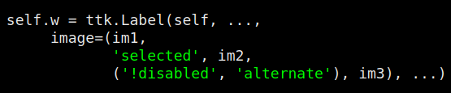

Этот виджет предназначен для отображения текста, изображения или того и другого. Обычно содержимое статично, но ваша программа может изменять текст или изображение.
Чтобы создать виджет ttk.Label в качестве дочернего виджета данного parent:
w = ttk.Label(parent, option=value, ...)
Опции включают:
Таблица 44. Опции ttk.Label
anchor |
Если текст и/или изображение меньше указанной ширины width, вы можете использовать опцию anchor, чтобы указать, где их расположить: tk.W, tk.CENTER или tk.E для выравнивания по левому краю, по центру или по правому краю, соответственно. Вы также можете указать этот параметр с помощью стиля. |
background |
Используйте эту опцию для установки цвета фона. Вы также можете указать этот параметр с помощью стиля. |
borderwidth |
Чтобы добавить границу вокруг ярлыка, установите этот параметр в значение ширины размера ширины. Вы также можете задать этот параметр с помощью стиля. |
class_ |
Вы можете указать имя класса виджета при создании этого виджета. Это имя можно использовать для настройки внешнего вида виджета; см. Раздел 27, "Стандартизация внешнего вида". После создания виджета имя класса виджета не может быть изменено. |
compound |
Если вы указали опции text и image, опция compound определяет, как их отображать. 'bottom' - Отображать изображение под текстом. 'image' - Отображать только изображение, а не текст. 'left' - Отображать изображение слева от текста. 'none' - Отображать изображение, если оно есть, в противном случае отображать текст. Это значение по умолчанию. 'right' - Отображать изображение справа от текста. 'text' - Отображать текст, а не изображение. 'top' - Отображение изображения над текстом. |
cursor |
Используйте эту опцию, чтобы указать внешний вид курсора мыши, когда он находится над виджетом; смотрите Раздел 5.8, "Курсоры". Значение по умолчанию (пустая строка) указывает, что курсор наследуется от родительского виджета. |
font |
Используйте эту опцию, чтобы указать стиль шрифта для отображаемого текста (text). Вы также можете указать этот параметр с помощью стиля. |
foreground |
Используйте эту опцию, чтобы указать цвет отображаемого текста (text). Вы также можете указать этот параметр с помощью стиля. |
image |
Эта опция задает изображение или изображения, которые будут отображаться в дополнение к тексту или вместо него. Значение должно быть изображением, как указано в Раздел 5.9, "Изображения". О том, что происходит, когда вы указываете и изображение, и текст, см. выше в опции compound. Вы можете указать несколько изображений, которые будут появляться на виджете в зависимости от состояния виджета (обсуждение состояний виджета см. в Раздел 50.2, "Карты стилей ttk: динамическое изменение внешнего вида"). Для этого в качестве значения этой опции задайте кортеж (i0, s1, i1, s2, i2, ...), где: i0 - изображение по умолчанию, которое будет отображаться на виджете. Для каждой пары значений после первого, si указывает состояние или комбинацию состояний, а i1 указывает изображение, которое будет отображаться, когда состояние виджета соответствует si. Каждый спецификатор состояния si может быть одним именем состояния, перед которым по желанию может стоять '!', или последовательностью таких имен. Параметр ! указывает, что виджет не должен находиться в этом состоянии. Например, предположим, что у вас есть три экземпляра PhotoImage с именами im1, im2 и im3, и в вызове конструктора Label вы включаете эту опцию:  Виджет отобразит изображение im2, если он находится в состоянии selected. Если он не находится ни в состоянии selected, ни в состоянии disabled, но находится в состоянии alternate, он отобразит изображение im3. В противном случае будет показано изображение im1. |
justify |
Если текст, который вы предоставляете, содержит символы новой строки ('\n'), эта опция определяет, как каждая строка будет располагаться по горизонтали: tk.LEFT - выравнивание по левому краю; tk.CENTER - выравнивание по центру; или tk.RIGHT - выравнивание по правому краю каждой строки. Вы также можете указать этот параметр с помощью стиля. |
padding |
Чтобы добавить дополнительное пространство по всем четырем сторонам текста и/или изображения, установите этот параметр на нужное значение размера. Вы также можете задать этот параметр с помощью стиля. |
relief |
Установите этот параметр на стиль рельефа, чтобы создать 3-мерный эффект. Чтобы этот эффект проявился, необходимо увеличить borderwidth. Вы также можете задать этот параметр с помощью стиля. |
style |
Используйте эту опцию для указания имени стиля виджета; см. Раздел 47, "Настройка и создание тем и стилей ttk". |
takefocus |
Используйте эту опцию, чтобы указать, будет ли виджет посещаться во время обхода фокуса; см. Раздел 53, "Фокус: маршрутизация ввода с клавиатуры". Укажите takefocus=True, если вы хотите, чтобы виджет принимал фокус; укажите takefocus=False, если виджет не должен принимать фокус. Значение по умолчанию - пустая строка; по умолчанию виджеты ttk.Label не получают фокус. |
text |
Строка текста, который будет отображаться в виджете. |
textvariable |
Экземпляр StringVar (см. Раздел 52, "Управляющие переменные: значения, стоящие за виджетами"); его значением будет текст, отображаемый на виджете. Если указаны и text, и textvariable, опция text будет проигнорирована. |
underline |
Вы можете потребовать, чтобы одна из букв в текстовой строке была подчеркнута, установив этот параметр в позицию этой буквы. Например, опции text='Quit' и underline=0 будут подчеркивать букву Q. Использование этой опции ничего не меняет функционально. Если вы хотите, чтобы приложение реагировало на клавишу <Q> или ее вариацию, например <control-shift-Q>, вам нужно будет настроить привязки с помощью системы событий. |
width |
Чтобы задать фиксированную ширину, установите этот параметр на количество символов. Чтобы задать минимальную ширину, установите этот параметр на минус количество символов. Если вы не укажете этот параметр, размер области метки будет достаточным для размещения текущего текста и/или изображения. Для текста, отображаемого пропорциональным шрифтом, фактическая ширина виджета будет основываться на средней ширине символа в шрифте, а не на конкретном количестве символов. Этот параметр также может быть задан через стиль. |
wraplength |
Если вы установите этот параметр в некоторое значение размера, весь текст будет разрезан на строки не длиннее этого размера. Этот параметр также может быть задан с помощью стиля. |
Следующие параметры tkinter.Label не поддерживаются конструктором ttk.Label.
Таблица 45. Опции tkinter.Label, отсутствующие в ttk.Label
activebackground |
Используйте карту стилей для управления опцией background; смотрите Раздел 50.2, "Карты стилей ttk: динамическое изменение внешнего вида". |
activeforeground |
Используйте карту стилей для управления опцией foreground. |
bitmap |
Не поддерживается. |
disabledforeground |
Используйте карту стилей для опции foreground; смотрите Раздел 50.2, "Карты стилей ttk: динамическое изменение внешнего вида". |
height |
Не поддерживается. |
highlightbackground |
Чтобы управлять цветом подсветки фокуса, когда метка не имеет фокуса, используйте карту стилей для управления опцией highlightcolor; см. Раздел 50.2, "Карты стилей ttk: динамические изменения внешнего вида". |
highlightcolor |
Вы можете указать цвет подсветки фокуса по умолчанию, установив этот параметр в стиле. Вы также можете управлять цветом подсветки фокуса с помощью карты стилей. |
highlightthickness |
Настройте этот параметр с помощью стиля. Эта опция может работать не во всех темах. |
padx |
Не поддерживается. |
pady |
Не поддерживается. |